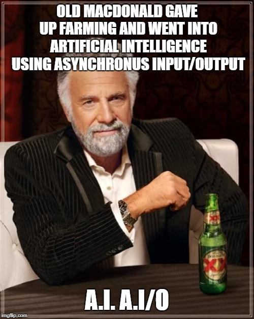
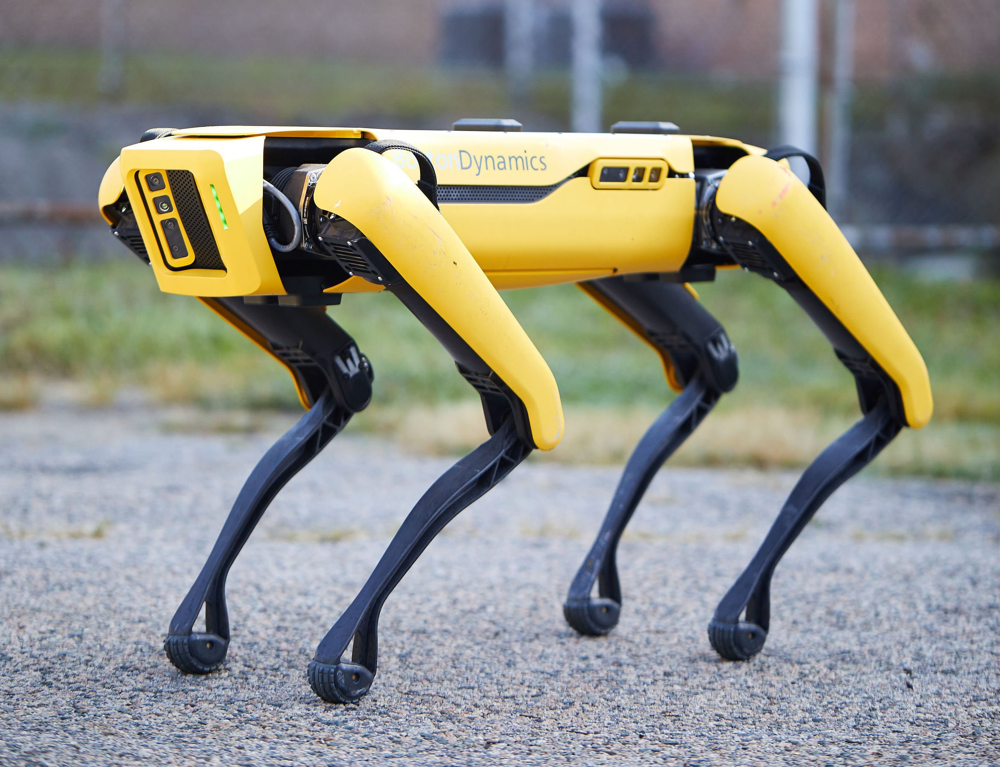

“Our intelligence is what makes us human, and AI is an extension of that quality.”
– Yann LeCun

Een machine zich zo laten gedragen dat we dat intelligent gedrag zouden noemen als een mens zich zo gedroeg.

NLP is een tak van AI die machines in staat stelt om menselijke
taal te begrijpen, menselijke taal op een waardevolle manier te
interpreteren en te genereren.
NLU vs NLG
NLP is a branch of AI that enables machines to understand,
interpret, and generate human language in a valuable way.
NLU vs NLG
Computervisie houdt in dat machines visuele informatie uit de wereld kunnen interpreteren, zoals afbeeldingen en video's.
Computer Vision involves teaching machines to interpret and understand visual information from the world, such as images and videos.
ANN's zijn computersystemen die geïnspireerd zijn op de structuur en functie van biologische neurale netwerken, gebruikt bij diep leren.
Artificial Neural Networks (ANNs) are computer systems inspired by the structure and function of biological neural networks, used in deep learning.
Een algoritme is een stapsgewijze reeks instructies voor het oplossen van een specifiek probleem of een taak uit te voeren.
An algorithm is a step-by-step sequence of instructions for solving a specific problem or performing a task.
Data Science combineert domeinkennis, programmeervaardigheden en gegevensanalyse om zinvolle inzichten uit gegevens te halen.
Data Science combines domain knowledge, programming skills, and data analysis to extract meaningful insights from data.
Smalle AI, ook bekend als zwakke AI, verwijst naar AI-systemen die zijn ontworpen voor specifieke taken of domeinen, zonder de algemene intelligentie zoals we die bij mensen zien.
Narrow AI, also known as Weak AI, refers to AI systems designed for specific tasks or domains, lacking the general intelligence seen in humans.
Algemene AI, of Sterke AI, staat voor machines met een menselijke intelligentie die een breed scala aan cognitieve taken kunnen uitvoeren en verschillende domeinen kunnen begrijpen.
General AI, or Strong AI, refers to machines with human-like intelligence capable of performing a wide range of cognitive tasks and understanding various domains.
Supervised Learning is een type ML waarbij het model wordt getraind op gelabelde gegevens, voorspellingen doet en de nauwkeurigheid in de loop van de tijd verbetert.
Supervised Learning is a type of ML where the model is trained on labeled data, makes predictions, and improves accuracy over time.
Unsupervised Learning is een type ML waarbij het model werkt met ongelabelde gegevens om zelf patronen en relaties te ontdekken.
Unsupervised Learning is a type of ML where the model works with unlabeled data to discover patterns and relationships on its own.
Versterkingsleren is een vorm van ML waarbij agenten leren om beslissingen te nemen door interactie met een omgeving en het ontvangen van beloningen of straffen.
Reinforcement Learning is a form of ML where agents learn to make decisions through interaction with an environment and receiving rewards or penalties.
Big Data verwijst naar extreem grote en complexe datasets die gespecialiseerde tools en technieken nodig hebben voor opslag, verwerking en analyse.
Big Data refers to extremely large and complex datasets that require specialized tools and techniques for storage, processing, and analysis.
AI-ethiek gaat in op de morele en maatschappelijke implicaties van AI, waaronder eerlijkheid, transparantie en het verantwoordelijke gebruik van AI technologieën.
AI Ethics addresses the moral and societal implications of AI, including fairness, transparency, and responsible use of AI technologies.
AI-bias treedt op wanneer algoritmen voor machinaal leren oneerlijke of discriminerende beslissingen nemen op basis van bevooroordeelde trainingsgegevens.
AI bias occurs when machine learning algorithms make unfair or discriminatory decisions based on biased training data.
ArticleEen Chatbot is een AI-programma dat is ontworpen om een gesprek met gebruikers te simuleren, vaak gebruikt voor klantenondersteuning of het ophalen van informatie.
A Chatbot is an AI program designed to simulate a conversation with users, often used for customer support or information retrieval.
IoT is een netwerk van onderling verbonden apparaten en objecten die gegevens kunnen verzamelen en uitwisselen, vaak geïntegreerd met AI voor slimme toepassingen.
IoT is a network of interconnected devices and objects that can collect and exchange data, often integrated with AI for smart applications.
RPA maakt gebruik van softwarerobots of "bots" voor het automatiseren van repetitieve taken en processen, waardoor de efficiëntie in verschillende industrieën verhoogt.
RPA uses software robots or "bots" to automate repetitive tasks and processes, increasing efficiency in various industries.
GAN is een type deep learning-model dat bestaat uit een generator en een discriminator die wordt gebruikt voor het genereren van synthetische gegevens en afbeeldingen.
GAN is a type of deep learning model consisting of a generator and a discriminator used for generating synthetic data and images.
LLM's zijn extreem grote neurale netwerken getraind op enorme hoeveelheden tekstgegevens, in staat om allerlei taken met natuurlijke taal uit te voeren. Moderne LLM's verwerken ook beeld, audio en code.
LLMs are extremely large neural networks trained on vast amounts of text data, capable of performing various natural language tasks. Modern LLMs also handle images, audio and code.
Diffusiemodellen zijn generatieve modellen die leren om ruis stap voor stap te verwijderen. Zo genereren ze nieuwe beelden, video en audio vanuit pure ruis.
Diffusion Models are generative models that learn to remove noise step by step, generating new images, video and audio from pure noise.
Audio/beeldsynthese houdt in het genereren van realistische audio of videobeelden met behulp van AI-technieken, zoals deep learning en GAN's.
Audio/Image Synthesis involves generating realistic audio or image data using AI techniques, such as deep learning and GANs.
Een GPU is gespecialiseerde hardware die berekeningen voor deep learning en AI versnelt dankzij parallelle verwerking.
A GPU is specialized hardware used to accelerate computations in deep learning and AI, known for its parallel processing capabilities.